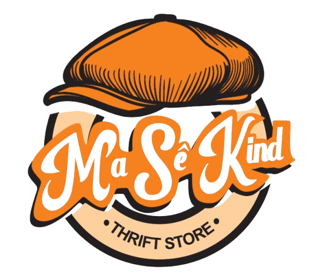

☰


A hybrid creative space exploring thrift, design, and imagination.
An exploration of thrifted objects and architectural thinking
A small experiment exploring reuse and spatial storytelling
A hybrid design concept mixing reuse and spatial design
A hybrid creative space exploring thrift, design, and imagination.